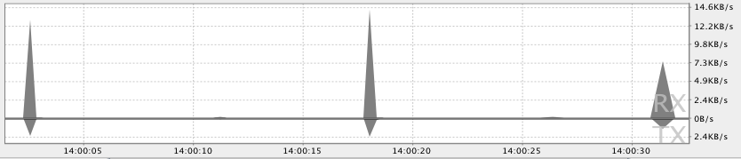

Using the wireless radio to transfer data is potentially one of your app's most significant sources of battery drain. To minimize the battery drain associated with network activity, it's critical that you understand how your connectivity model will affect the underlying radio hardware.
This lesson introduces the wireless radio state machine and explains how your app's connectivity model interacts with it. It goes on to propose ways to minimize your data connections, use prefetching, and bundle your transfers in order to minimize the battery drain associated with your data transfers.
The Radio State Machine
A fully active wireless radio consumes significant power, so it transitions between different energy states in order to conserve power when not in use, while attempting to minimize latency associated with "powering up" the radio when it's required.
The state machine for a typical 3G network radio consists of three energy states:
- Full power: Used when a connection is active, allowing the device to transfer data at its highest possible rate.
- Low power: An intermediate state that uses around 50% of the battery power at the full state.
- Standby: The minimal energy state during which no network connection is active or required.
While the low and idle states drain significantly less battery, they also introduce significant latency to network requests. Returning to full power from the low state takes around 1.5 seconds, while moving from idle to full can take over 2 seconds.
To minimize latency, the state machine uses a delay to postpone the transition to lower energy states. Figure 1 uses AT&T's timings for a typical 3G radio.

Figure 1. Typical 3G wireless radio state machine.
The radio state machine on each device, particularly the associated transition delay ("tail time") and startup latency, will vary based on the wireless radio technology employed (2G, 3G, LTE, etc.) and is defined and configured by the carrier network over which the device is operating.
This lesson describes a representative state machine for a typical 3G wireless radio, based on data provided by AT&T. However, the general principles and resulting best practices are applicable for all wireless radio implementations.
This approach is particularly effective for typical web browsing as it prevents unwelcome latency while users browse the web. The relatively low tail-time also ensures that once a browsing session has finished, the radio can move to a lower energy state.
Unfortunately, this approach can lead to inefficient apps on modern smartphone OSs like Android, where apps run both in the foreground (where latency is important) and in the background (where battery life should be prioritized).
How Apps Impact the Radio State Machine
Every time you create a new network connection, the radio transitions to the full power state. In the case of the typical 3G radio state machine described above, it will remain at full power for the duration of your transfer—plus an additional 5 seconds of tail time—followed by 12 seconds at the low energy state. So for a typical 3G device, every data transfer session will cause the radio to draw energy for almost 20 seconds.
In practice, this means an app that transfers unbundled data for 1 second every 18 seconds will keep the wireless radio perpetually active, moving it back to high power just as it was about to become idle. As a result, every minute it will consume battery at the high power state for 18 seconds, and at the low power state for the remaining 42 seconds.
By comparison, the same app that bundles transfers of 3 seconds of every minute will keep the radio in the high power state for only 8 seconds, and will keep it in the low power state for only an additional 12 seconds.
The second example allows the radio to be idle for an additional 40 second every minute, resulting in a massive reduction in battery consumption.

Figure 2. Relative wireless radio power use for bundled versus unbundled transfers.
Prefetch Data
Prefetching data is an effective way to reduce the number of independent data transfer sessions. Prefetching allows you to download all the data you are likely to need for a given time period in a single burst, over a single connection, at full capacity.
By front loading your transfers, you reduce the number of radio activations required to download the data. As a result you not only conserve battery life, but also improve the latency, lower the required bandwidth, and reduce download times.
Prefetching also provides an improved user experience by minimizing in-app latency caused by waiting for downloads to complete before performing an action or viewing data.
However, used too aggressively, prefetching introduces the risk of increasing battery drain and bandwidth use—as well as download quota—by downloading data that isn't used. It's also important to ensure that prefetching doesn't delay application startup while the app waits for the prefetch to complete. In practical terms that might mean processing data progressively, or initiating consecutive transfers prioritized such that the data required for application startup is downloaded and processed first.
How aggressively you prefetch depends on the size of the data being downloaded and the likelihood of it being used. As a rough guide, based on the state machine described above, for data that has a 50% chance of being used within the current user session, you can typically prefetch for around 6 seconds (approximately 1-2 Mb) before the potential cost of downloading unused data matches the potential savings of not downloading that data to begin with.
Generally speaking, it's good practice to prefetch data such that you will only need to initiate another download every 2 to 5 minutes, and in the order of 1 to 5 megabytes.
Following this principle, large downloads—such as video files—should be downloaded in chunks at regular intervals (every 2 to 5 minutes), effectively prefetching only the video data likely to be viewed in the next few minutes.
Note that further downloads should be bundled, as described in the next section, Batch Transfers and Connections, and that these approximations will vary based on the connection type and speed, as discussed in Modify your Download Patterns Based on the Connectivity Type.
Let's look at some practical examples:
A music player
You could choose to prefetch an entire album, however should the user stop listening after the first song, you've wasted a significant amount of bandwidth and battery life.
A better approach would be to maintain a buffer of one song in addition to the one being played. For streaming music, rather than maintaining a continuous stream that keeps the radio active at all times, consider using HTTP live streaming to transmit the audio stream in bursts, simulating the prefetching approach described above.
A news reader
Many news apps attempt to reduce bandwidth by downloading headlines only after a category has been selected, full articles only when the user wants to read them, and thumbnails just as they scroll into view.
Using this approach, the radio will be forced to remain active for the majority of users' news-reading session as they scroll headlines, change categories, and read articles. Not only that, but the constant switching between energy states will result in significant latency when switching categories or reading articles.
A better approach would be to prefetch a reasonable amount of data at startup, beginning with the first set of news headlines and thumbnails—ensuring a low latency startup time—and continuing with the remaining headlines and thumbnails, as well as the article text for each article available from at least the primary headline list.
Another alternative is to prefetch every headline, thumbnail, article text, and possibly even full article pictures—typically in the background on a predetermined schedule. This approach risks spending significant bandwidth and battery life downloading content that's never used, so it should be implemented with caution.
One solution is to schedule the full download to occur only when connected to Wi-Fi, and possibly only when the device is charging. This is investigated in more detail in Modify your Download Patterns Based on the Connectivity Type.
Batch Transfers and Connections
Every time you initiate a connection—irrespective of the size of the associated data transfer—you potentially cause the radio to draw power for nearly 20 seconds when using a typical 3G wireless radio.An app that pings the server every 20 seconds, just to acknowledge that the app is running and visible to the user, will keep the radio powered on indefinitely, resulting in a significant battery cost for almost no actual data transfer.
With that in mind it's important to bundle your data transfers and create a pending transfer queue. Done correctly, you can effectively phase-shift transfers that are due to occur within a similar time window, to make them all happen simultaneously—ensuring that the radio draws power for as short a duration as possible.
The underlying philosophy of this approach is to transfer as much data as possible during each transfer session in an effort to limit the number of sessions you require.
That means you should batch your transfers by queuing delay tolerant transfers, and preempting scheduled updates and prefetches, so that they are all executed when time-sensitive transfers are required. Similarly, your scheduled updates and regular prefetching should initiate the execution of your pending transfer queue.
For a practical example, let's return to the earlier examples from Prefetch Data.
Take a news application that uses the prefetching routine described above. The news reader collects analytics information to understand the reading patterns of its users and to rank the most popular stories. To keep the news fresh, it checks for updates every hour. To conserve bandwidth, rather than download full photos for each article, it prefetches only thumbnails and downloads the full photos when they are selected.
In this example, all the analytics information collected within the app should be bundled together and queued for download, rather than being transmitted as it's collected. The resulting bundle should be transferred when either a full-sized photo is being downloaded, or when an hourly update is being performed.
Any time-sensitive or on-demand transfer—such as downloading a full-sized image—should preempt regularly scheduled updates. The planned update should be executed at the same time as the on-demand transfer, with the next update scheduled to occur after the set interval. This approach mitigates the cost of performing a regular update by piggy-backing on the necessary time-sensitive photo download.
Reduce Connections
It's generally more efficient to reuse existing network connections than to initiate new ones. Reusing connections also allows the network to more intelligently react to congestion and related network data issues.
Rather than creating multiple simultaneous connections to download data, or chaining multiple consecutive GET requests, where possible you should bundle those requests into a single GET.
For example, it would be more efficient to make a single request for every news article to be returned in a single request / response than to make multiple queries for several news categories. The wireless radio needs to become active in order to transmit the termination / termination acknowledgement packets associated with server and client timeout, so it's also good practice to close your connections when they aren't in use, rather than waiting for these timeouts.
That said, closing a connection too early can prevent it from being reused, which then requires additional overhead for establishing a new connection. A useful compromise is not to close the connection immediately, but to still close it before the inherent timeout expires.
Use the DDMS Network Traffic Tool to Identify Areas of Concern
The Android DDMS (Dalvik Debug Monitor Server) includes a Detailed Network Usage tab that makes it possible to track when your application is making network requests. Using this tool, you can monitor how and when your app transfers data and optimize the underlying code appropriately.
Figure 3 shows a pattern of transferring small amounts of data roughly 15 seconds apart, suggesting that efficiency could be dramatically improved by prefetching each request or bundling the uploads.
Figure 3. Tracking network usage with DDMS.
By monitoring the frequency of your data transfers, and the amount of data transferred during each connection, you can identify areas of your application that can be made more battery-efficient. Generally, you will be looking for short spikes that can be delayed, or that should cause a later transfer to be preempted.
To better identify the cause of transfer spikes, the Traffic Stats API allows you to tag the data transfers occurring within a thread using the TrafficStats.setThreadStatsTag() method, followed by manually tagging (and untagging) individual sockets using tagSocket() and untagSocket(). For example:
TrafficStats.setThreadStatsTag(0xF00D); TrafficStats.tagSocket(outputSocket); // Transfer data using socket TrafficStats.untagSocket(outputSocket);
The Apache HttpClient and URLConnection libraries automatically tag sockets based on the current getThreadStatsTag() value. These libraries also tag and untag sockets when recycled through keep-alive pools.
TrafficStats.setThreadStatsTag(0xF00D);
try {
// Make network request using HttpClient.execute()
} finally {
TrafficStats.clearThreadStatsTag();
}
Socket tagging is supported in Android 4.0, but real-time stats will only be displayed on devices running Android 4.0.3 or higher.